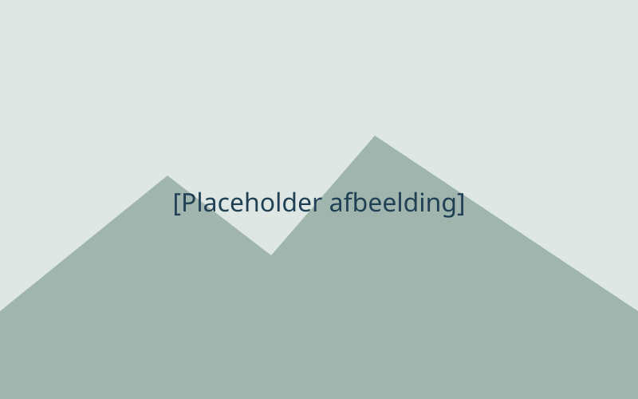

[Placeholder]LOGO
[Placeholder naam]
[Placeholder tagline]
[Placeholder description]
SPECIALISMEN
VOORDELEN
- [Placeholder voordeel]
- [Placeholder voordeel]
- [Placeholder voordeel]
[Placeholder label]
[Placeholder teamnotitie]
CLIËNTBEOORDELINGEN
[Placeholder CTA-tekst]
★★★★★
"[Placeholder review quote]"